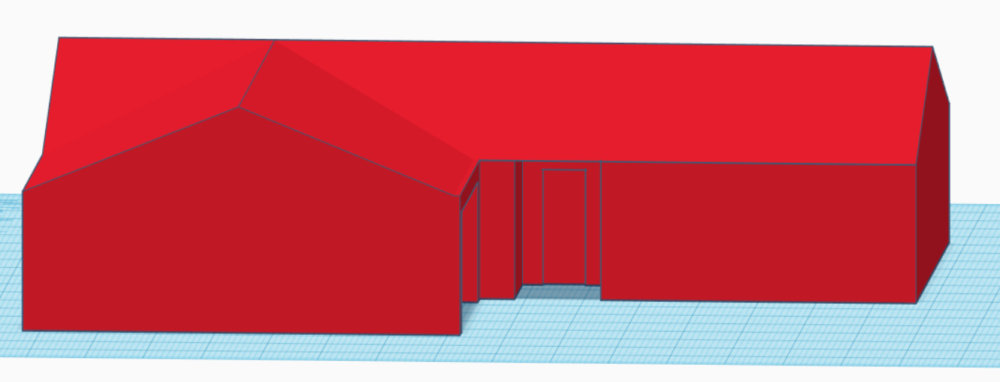

On the fifth meeting (2/1/2021) we designed some model houses. The example house I designed was made to scale up to what a real house would be like . This meeting was a little less structured, with me explaining what I was doing as we went, and students following along making whatever creative changes they deemed worthy (as can be seen above, in a model house made by Emma Viglotti). I started with a 150 x 120 x 24 mm box, and cut out a portion of it to make an L shape. Then, part of the L shape was hollowed out, making a garage.
Afterwards, roofs were added using two triangles, an area was cut out for the porch, and a little outline was made to indicate a door.

Then I added a window, and some solar panels (cause why not). At this point, one student informed me that I could change the color of the house by clicking the “solid” button in the block options menu. And so, my new beautiful pink house was finished. But it still needed something… so I added a shower to the garage. As for why... Well, why not?